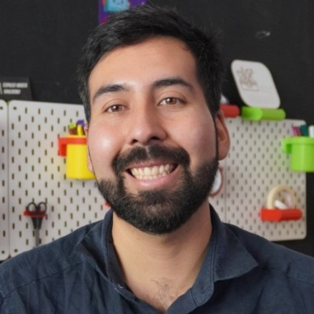

Estudié diseño industrial en la Universidad Diego Portales. Empecé diseñando objetos y terminé diseñando los lugares donde se hacen los objetos: laboratorios de fabricación digital, programas de curso, kits que un profesor puede usar sin que yo esté al lado.
Desde 2022 soy director de investigación, desarrollo e innovación en Ideo Maker, donde he armado salas maker para colegios y fundaciones, del plano al primer prototipo. En paralelo creé y dicté siete cursos en el Programa PENTA UC de la Universidad Católica, sobre robótica, diseño de juegos y tecnología, para estudiantes de enseñanza básica y media. Los siete son de creación propia: propuesta, programa, metodología y material.
Lo que me interesa es la parte que nadie fotografía. Que el FabLab siga funcionando tres años después de la inauguración. Que el protocolo de seguridad esté escrito. Que el profesor pueda dar la clase sin mí. Un espacio maker que depende de quien lo instaló no es un espacio maker, es una demostración.
Antes de eso fui jefe de diseño en Converso, diseñador gráfico en el INFAS de la Universidad Alberto Hurtado y fotógrafo para la CEPAL y la Organización Panamericana de la Salud. Hoy sumo a todo eso el desarrollo de aplicaciones y plataformas web, casi siempre a partir de un problema concreto: un entrenamiento que quería medir, un inventario que se llevaba en papel, una barrera de idioma en una consulta médica. Busco proyectos donde el diseño tenga que quedar operando, y no solamente entregado.
